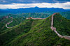
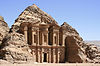
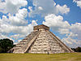
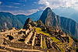
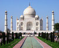
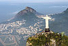

This 7 wonders of worlds are popularly known as the “new Seven Wonders of the World". The new wonders were chosen in 2007 through an online contest put on by a Swiss company, the New 7 Wonders Foundation, in which more than tens of millions of people voted. All are Unesco World Heritage sites. The popularity poll was led by Canadian-Swiss Bernard Weber and organized by the New7Wonders Foundation based in Zurich, Switzerland, with winners announced on 7 July 2007 in Lisbon.
The New7Wonders Foundation claimed that more than 100 million votes were cast through the Internet or by telephone. Voting via the Internet was limited to one vote for seven monuments per person/identity, but multiple voting was possible through telephone. Hence the poll was considered unscientific. According to John Zogby, founder and current President/CEO of the Utica, New York-based polling organization Zogby International, New7Wonders Foundation drove "the largest poll on record".
The program drew a wide range of official reactions. Some countries touted their finalist and tried to get more votes cast for it, while others downplayed or criticized the contest. After supporting the New7Wonders Foundation at the beginning of the campaign by providing advice on nominee selection, the United Nations Educational, Scientific, and Cultural Organization (UNESCO), by its bylaws having to record all and give equal status to world heritage sites, distanced itself from the undertaking in 2001 and again in 2007.
The New7Wonders Foundation, established in 2001, relied on private donations and the sale of broadcast rights and received no public funding or taxpayers' money. After the final announcement, New7Wonders said it didn't earn anything from the exercise and barely recovered its investment.
All 7 wonders which are selected as world's most beautiful historical places are as below:
| Wonder | Location | Image | Year |
|---|---|---|---|
| Great Wall of China | China |  | 700 BCE |
| Petra | Jordan |  | 312 BCE |
| The Colosseum | Rome, Italy |  |
80 BCE |
| Chichen Itza | Yucatán, Mexico |  | 600 BCE |
| Machu Picchu | Cuzco Region, Peru |  | 1450 BCE |
| Taj Mahal | Agra, Uttar Pradesh, India |  | 1643 BCE |
| Christ the Redeemer | Rio de Janeiro, Brazil |  | 1931 BCE |
All of these above are winners of New Seven Wonders of World but The Great Pyramid of Giza, largest and oldest of the three pyramids at the Giza Necropolis in Egypt and the only surviving of the original Seven Wonders of the Ancient World, was granted honorary status.
For more information, you can visit "Giza Pyramid". You will find more information and images for that Honorary status of worl.